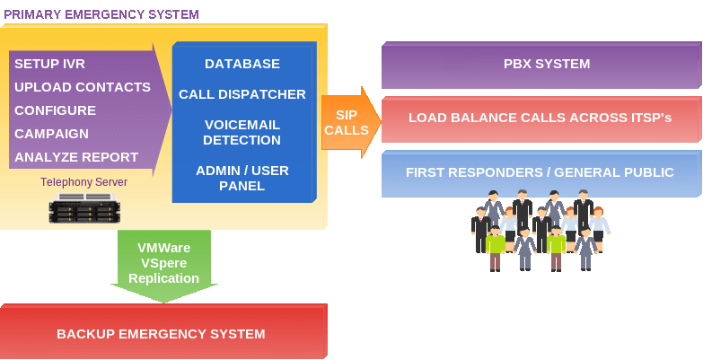
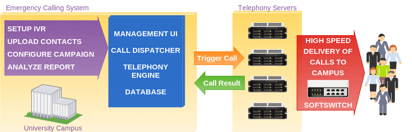

USER CASES
We regard our client list as confidential, so we have not mentioned the institutions by name, but they have indicated that they are prepared to discuss their deployments with potential HelloHunter customers.

LOCAL GOVERNMENT
A local government wished to replace their ageing 24 port analogue auto-dialer with a higher capacity system with a lower cost of ownership.
They chose an HelloHunter system to call first responders to an dialer, note their response, then inform the community of the dialer. HelloHunter fitted into their existing infrastructure, using virtualisation to duplicate HelloHunter across two different data centres to provide redundancy.
The multi-tenant aspect of HelloHunter allows them to safely provide auto-dialer services to a number of other departments with minimal training due to the intuitive web interface.
They have gone on to integrate some of their other IT systems into HelloHunter, providing a joined up, integrated and versatile auto-dialer solution across local government departments in a variety of roles; one being "Contact Verification" to confirm that contact details are correct for more accurate dialer and notification voice broadcasting.
The cost of deploying HelloHunter, along with training, support and some customisation was noted to be considerably less than another year's support and maintenance contract for their old analogue autodialer.
They chose an HelloHunter system to call first responders to an dialer, note their response, then inform the community of the dialer. HelloHunter fitted into their existing infrastructure, using virtualisation to duplicate HelloHunter across two different data centres to provide redundancy.
The multi-tenant aspect of HelloHunter allows them to safely provide auto-dialer services to a number of other departments with minimal training due to the intuitive web interface.
They have gone on to integrate some of their other IT systems into HelloHunter, providing a joined up, integrated and versatile auto-dialer solution across local government departments in a variety of roles; one being "Contact Verification" to confirm that contact details are correct for more accurate dialer and notification voice broadcasting.
The cost of deploying HelloHunter, along with training, support and some customisation was noted to be considerably less than another year's support and maintenance contract for their old analogue autodialer.


UNIVERSITY CAMPUS
An HelloHunter system was deployed by a large university requiring a high capacity reverse dialer notification system for both staff and students.
The University utilised a total of 5 servers, one configured as the management server and the other 4 as telephony nodes.
This multi-server HelloHunter system is capable of thousands of calls per minute, and can provide even greater capacity simply by adding more telephony servers.
The university had a strict policy of of using RHEL (Redhat Enterprise Linux) on its servers. We were able to easily port HelloHunter to RHEL, then deploy HelloHunter on their servers in a short period of time.
Notifications are made via the internal phone system to staff and via the PSTN to students. They plan to use HelloHunter in a number of other roles, not just as an dialer notification system.
The University utilised a total of 5 servers, one configured as the management server and the other 4 as telephony nodes.
This multi-server HelloHunter system is capable of thousands of calls per minute, and can provide even greater capacity simply by adding more telephony servers.
The university had a strict policy of of using RHEL (Redhat Enterprise Linux) on its servers. We were able to easily port HelloHunter to RHEL, then deploy HelloHunter on their servers in a short period of time.
Notifications are made via the internal phone system to staff and via the PSTN to students. They plan to use HelloHunter in a number of other roles, not just as an dialer notification system.
